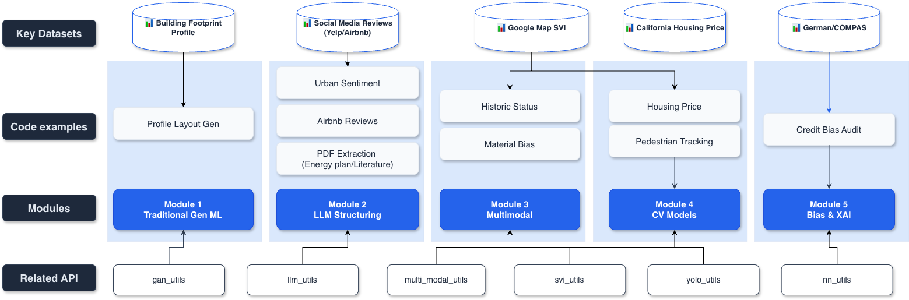

Starter Kits Documentation
This document provides detailed information about all five starter kit modules available for your final projects. Each module includes comprehensive components, example use cases, and required packages.

Starter Kits Overview
Pick one module to view details and starter code.
Module 1: Traditional Generative ML
Traditional generative ML for synthetic data generation and prediction.
Open ModuleModule 2: LLM for Structuring Information
LLMs to structure unstructured text into analyzable formats.
Open ModuleModule 3: Multimodal Reasoning
Multimodal (vision-language) reasoning over images and text.
Open ModuleModule 4: CV Models (Segmentation, Detection, Tracking)
Computer vision: detection, segmentation, tracking, and visual analytics.
Open ModuleModule 5: Bias Detection & Interpretability
Bias detection, fairness evaluation, and interpretability tooling.
Open Module